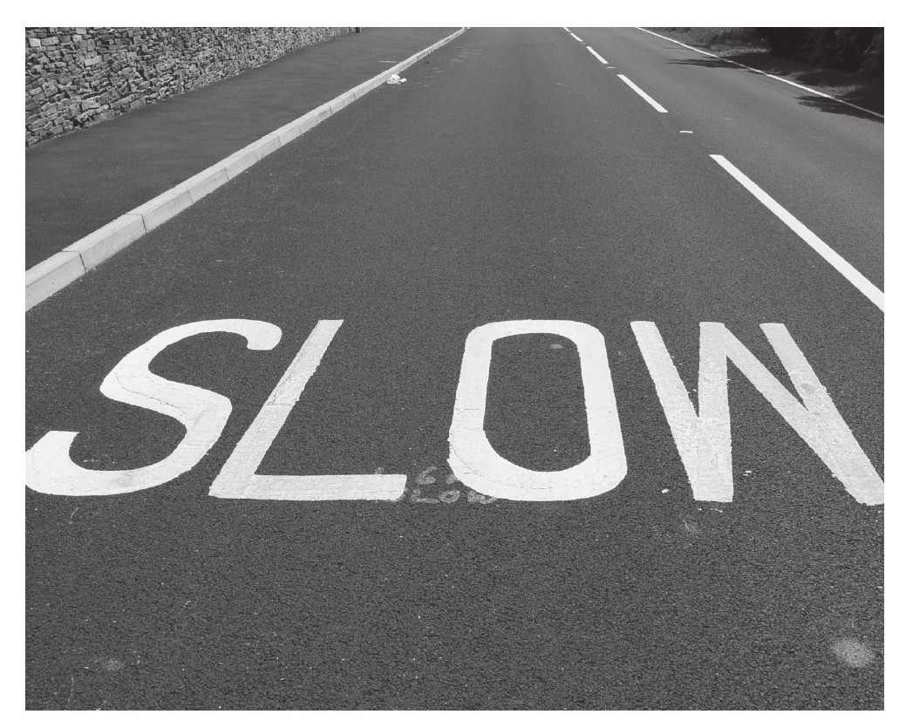
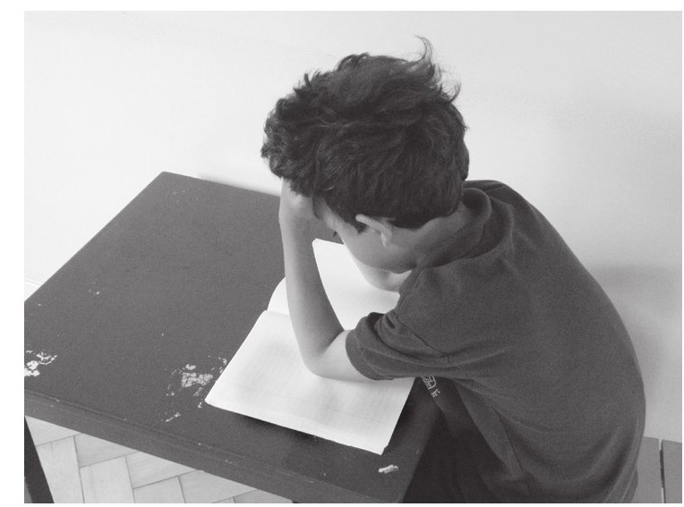

是否应该依据天生资质对学生开展分层式教学，一直是美国教育界最具争议的问题之一。许多家长对此表示支持，因为他们希望自己的孩子能和具有相同天赋资质的孩子在一起学习。这似乎完全可以理解，并且让人感觉这主意确实不错。但是一些国际研究表明：像日本和芬兰这些拒绝采用分层式教学的国家，其教育水平往往会跻身于世界先进国家之列；而像美国这样采用分层式教学的国家，对学生的教育结果不尽如人意。其原因何在呢？这一现象又是从何时开始引起了社会的广泛关注呢？
1999年，第三届国际数学和科学研讨会上，研究人员从38个国家中搜集了一组八年级学生的学习数据进行研究[1]。结果显示，美国的学生水平仅仅排在第19位。这样的结论在全世界都引起了广泛的关注和热议。数据分析家揭开了关于分层式教学的事实：在关于学生成绩变化幅度的调查中，美国是所有国家中学生平均成绩差异最大的国家，这也就表明了美国的分层教育程度最高[2]。学生平均成绩最高的是韩国，而韩国的分层教育程度最低，该国基本上采用的是混合教学模式。在美国，学生成绩与家庭社会经济地位有着密切关联，这也正是导致美国学校盛行分层式教学的原因。第二届国际数学和科学研讨会在1982—1984年间得到的调查数据同样也表明学生平均成绩高的国家都不采用分层式教学，而学生平均成绩低的国家却采用这种模式，因而专家们才得出了这样的分析结论。
有些人认为，美国想在教育阶段早期就挑选出成绩好、天赋高的学生。但是这样的方式存在严重的缺陷，比如当学生处于不同成长阶段，难以正确评估其客观水平，以及造成了学校教育的高度不平等化等问题，这已经被国际教育研究成果印证。
日本的教育模式则恰恰相反，日本教育推行的观点是让所有学生都能取得好成绩。为了提高学生的整体水平，老师在讲稍微复杂的数学问题之前会对讲课效果做一个预判。对西方国家这种将学生以能力来划分优等和劣等的教育方式，日本教育界通常会大惑不解。正如George Mason和George Bracey教授所说：
我在斯坦福大学的一位学生Lisa Yiu对日本和美国这两种截然不同的教育方式十分感兴趣。她为此还去了这两个国家了解相关情况。她对日本的数学老师进行了采访，这些老师解释了他们为何不采用分层式教学：“在日本教育中，最为看重的是教学平衡。这样每个人都相信自己有能力去做任何事情。我认为这么做其实是件好事，我们不愿意刻意对学生的能力加以区分。”
日本教育学生“互相帮助、互相学习、一起成长、德智体全方位发展”，这种模式是学生取得好成绩的原因之一。研究者告诉我们，这种让学生保持平等而并非以能力分层的教学模式，不仅仅有益于那些成绩水平较低的学生，同时也有益于学习成绩优异的学生。
我对数学课堂教育的两种方法进行了长期的纵向研究，从未对分层式教学进行研究，但是现在看起来这个因素对两种教学方法都具有影响，甚至起到了关键作用。在我之前对两所学校成功教学案例的研究中，两所学校都反对采用分层式教学模式，而是采用了小组学习形式，这一举措与国际教育的宏观趋势不谋而合。
英国采用了一套公开的学习能力评估体系，这套体系要比美国的教育评价体系对成绩差的学生要求更为苛刻。在英国，学生依据成绩被分为不同的层级，我对第一级（最高）到第八级（最低）做了全方位研究。其实我对于学习成绩差的学生被划分为低层级并不感到惊讶，部分是因为他们主动选择去完成最低级别的作业任务，当然还有部分原因是，有些学生已经知道自己被划分为低层级，被贴上了成绩差的标签而选择了自我放弃学习。对于第二级以下的学生来说，这种情况更为普遍。
令人感到吃惊的是，即使是第一级的学生，也就是那些成绩最好的学生，同样也不适应分层式教学，成绩优异的学生在优秀学生群体里会感到更大的压力。这些优秀学生有时会觉得课堂上的讲课进程过快，而他们却不好意思说出来，导致无法跟进并理解老师在课堂上讲解的内容，这样他们就开始逐渐倦怠以至于厌烦上数学课。其实成绩优异的学生本应该对数学知识有着很好的理解，相反，他们对数学学习感到无形的压力以及信心不足。在开展分层式教学的三年后，学生的考试成绩要明显低于未分层时。
在美国，这种对学生的分层式教学并没有像英国那样公开，但依然具有广泛的影响力。美国的七年级和八年级学生中最为典型的分层表现就是依据学生的能力及水平将他们分配到不同的班级当中，这对于他们以后的个人发展至关重要。尽管不同班级的教学重要性不一样，但是这些班级的名称听起来都颇为相似。一些七年级的学生所在班级也许取名为“数学七班”，而其余水平更高一些的学生也许被分在“学前代数班”（他们学习的是大学入学前的初等代数课程）。一些八年级学生则被分在“数学八班”或者“学前代数班”，而其余水平更高的学生则被分在“代数班”。
关键的问题是，如果美国的高中生没有在初中通过代数课考试，那么学校就不能为学生开设有关微积分方面的课程。多数的美国高中，某一项数学分支的课程教学可能需要一学年的时间，如果在九年级才开始上代数课的话，那么至少需要四学年，才有可能接触微积分课程（前提是学生们需要修完代数、几何、高等代数以及微积分的预备知识）。由此看来，初中老师对学生的分层式教学将一直影响至高中阶段，其实从初中起，学生们的抉择就关系到自己在未来能否进入大学学习。而那些在中学时代就选择低级别教育标准的学生，在选择的那一刻，仿佛会有某种声音“回响”在他们耳边，那就是大学校门向他们关闭的声音。
教育工作者逐渐意识到分层式教学对学生的不利影响。在一项反分层式数学教育改革的研究中，研究者将接受分层式教学的学生与混合式教学的学生进行了对比研究，研究对象来自纽约街区一所中学的共六届学生。通过分析初中时的学习经历对于他们个人发展的影响，发现那些接受混合式教学的学生会在高中时期选修更多的高级数学课程，并且通过率普遍较高，完成结业考试的时间要比纽约州所有学生的平均时间提早一年左右。不仅如此，这些学生在各类考试中的成绩也明显更高。混合式的教学模式在不同水平的学生中间都取得了成功，这一点我们从学生的考试成绩就可以得到印证。
我在美国和英国工作的时候发现，学生在进入高中混合式教学班开始正式学习前，老师都会承诺他们采用平等式教学。不论学生们之前的成绩如何，加州的Railside学校都会为所有学生开设代数课程。这对于所有学生来说都是一项挑战，即使是在初中时期就已经学习过代数课程的学生，因为这其中涉及了一些多元化、高维度的知识。学校同时也会开设时长为90分钟的大型课程，但是这样的课程只会开设半年。这也就意味着在四年的学校生涯中，每位学生在八年级时都有机会接触到微积分的相关课程，混合式教学所达到的比率是47%。更为有趣的是，受益最多的是混合式教学班级中的高水平学生，他们要比分层式教学中的高水平学生达到更高的水平，成绩进步也更快。
很多家长担心混合式教学会因为学生的学习需求不同而缺乏合理性，以及可能限制了教师资源的优化分配。那么为什么混合式教学又可以使学生取得更高的学业成绩呢？我们一起来看看下面四点重要的因素：
研究者将学生在校学习取得成功的关键因素称为：学习的机会[5]。如果学生没有机会去接触那些具有挑战性且水平较高的课业任务，那么学生自身水平也不会有相应提高。我们知道，在分层式教学中，当学生的级别较低时，他们所接受的教育水平也是相对较低的，而这对于学生的个人发展来讲具有严重不利的影响。除此之外，老师还会不可避免地对这些学生彻底失去希望。
在20世纪60年代，社会学家Robert Rosenthal和Leonove Jacobson就开展了一项老师心理预期对学生学习影响的实验。他们将旧金山小学的学生分成了两组，并告知老师其中一组的学生在某方面具有特殊才能。但事实上，这两组学生是随机分配的。在经过一段时期的教学测试研究后，被认为具有“特殊才能”的那一组学生在智力测试中的成绩要高于所谓“能力普通”的那一组。这样的结果就表明，老师的期望不同，对学生起到的影响也不同[6]。
在一次对英国6所学校的教学研究中，我和研究人员都对那些被分在低层级的学生感到惋惜，因为老师低估了他们的学习能力。其中的一位学生告诉我们：“老师把我们当成了小孩子，觉得我们能力不够，让我们把板书上的所有内容都抄在笔记本上，并且给我们讲解所有问题的答案，这让我们觉得自己好像什么都不知道一样。在这样的教学过程中，我们学不到任何东西，甚至对自己产生了怀疑。”
学生毫无保留地向我们诉说老师对他们的期望太低，以致阻碍了他们的进步。我们通过对课堂教学的观摩就可以印证这一事实。学生只是想简简单单地去获取学习的机会而已：“很显然我们可能的确不够聪明，我们被分入了第五级，但这毕竟是数学课，我们是九年级的学生，也需要去学习各种知识。”[7]
当老师对学生的学习期望过低时，他们就会以最低的教学标准来要求学生，因而学生的各种潜力也就被压制了。这也正是为什么以能力来分层的教学模式在许多国家不合法的原因，这其中就包括了芬兰，而芬兰恰恰是在最近一次国际级别考试中学生平均成绩排名最高的国家。[8]
当采用分层式教学模式时，不论是高层级还是低层级学生，都暗示着他们具有不同的潜力。老师们会将教学方法及大纲以中等水平的学生作为参照，以此来确定相应的教学内容，在潜意识中会认为同一层级的学生水平大体是接近的。在这样的教学体系当中，就不可避免地造成教学进度规划失误或者某些学生的能力与课程安排不相匹配。当一位老师面对着一个普通班级的学生时，有时可能做出学生的学习需求都相同的谬误假设，而分层式教学恰好是在这一基础上又做出了一系列的谬误假设。当老师在对学生进行能力分层时，他们会想当然地认为同级别的学生实力水平是相当的，而这样的假设只有在学生提出明确的学习需求，以及能够适应不同课程教学进度的情况下才成立。
在未分层教学模式下，老师们采用开放式教学，以便能够照顾到不同学生的实际学习水平及理解速度。如此一来也就不用提前预判学生的能力水平并准备相应的教案，老师们需要做的就是准备一份针对各类学生的通用教案，然后尽最大努力让学生的学习状态达到最佳水平，充分挖掘学生的潜力。这也就意味着对于所有学生来讲，教学进度是恰当的，讲课进度是可接受的。
在许多实际教学中，学生的能力分层依据可能仅仅是某次考试的成绩排名，而有部分学生往往只因1分之差就错过了加入级别更高的小组，使他们与本可能在未来取得的辉煌成就失之交臂。
在以色列和英国，研究人员发现位于各层级分界线上的学生个人水平能力非常接近，但是从事实来讲，进入更高层级的学生在最终课程结业时会取得更高的分数，所以说学生的成绩和层级有着极大的关联性。错误的层级分界是指一些学生本应该划分到高层级，却因为某种原因而被错误地划分到其他层级。这种被学校武断地分配到低水平层级的学生不在少数。
在分层式教学的班级中，学生的教学资源主要来自老师和教材。因为老师已经假定学生的学习需求是一致的，而且他们都采用同样的方法去学习，因此老师在长时间的教学讲课过程中都会感觉很顺利。同时老师还要求学生在课堂上保持静默或者至少要保持相对安静的教学环境，排斥各式各样的开放式问题交流方式。习，因此老师在长时间的教学讲课过程中都会感觉很顺利。同时老师还要求学生在课堂上保持静默或者至少要保持相对安静的教学环境，排斥各式各样的开放式问题交流方式。

在混合式教学班级中，学生以小组形式一起学习，互帮互助。班里的每一位学生都可以成为其他人身边的学习资源，而不仅仅是依靠老师一个人讲课而已。当学生遇到自己不理解的数学问题时会很乐意地去向周围的人寻求帮助。而熟知问题解答的学生也就顺其自然地充当了助人者的角色，这对高水平的学生来说好像是浪费时间，但事实上却是，这些高水平学生在这样的班级中之所以能取得更高的成绩，恰恰是因为他们在给其他学生讲解的过程中加深了对数学问题的理解。在解答别人疑问的过程中，高水平学生也会发现自己知识体系存在的漏洞并加以弥补，从而进一步巩固已经掌握的知识。
在我开展的两项纵向课题研究调查中，成绩优异的学生向我谈到在帮助其他学生解答问题的过程中，也使得他们自己对知识的理解更加深入透彻了。Railside高中一些成绩优异的学生讲述了他们在混合式班级的学习经历，Zane说道：“这里的每个人知识结构都不一样，但是班级教学之所以能够如此成功，也正是因为每个人的水平不同，我们能够不断地互帮互助，大家共同进步。”
有一些成绩出色的学生在刚进入Railside高中时，觉得为他人答疑解惑是一种不公平的行为。但是他们在学习的第一年就转变了自己的态度，因为他们意识到在帮助别人的同时自己也会收获颇丰。Imela也说：“我并没有觉得自己是在帮助别人，我只是想把知识掌握得更扎实。”
成绩优异的学生陆续发现了不同水平的学生可以通过小组学习讨论的方式得到意想不到的收获。Ana就谈道：“小组讨论的学习模式非常棒，因为组内的每一位成员都是你的学习伙伴。如果某个人在学习中存有疑问，比如说这个问题我不理解，而组内其他人却明白是怎么回事，那么他们就可以来为我来讲解，反之亦然。这难道不是一件很棒的事情吗？”
在一个小组学习的学生，互帮互助，每一个人身上仿佛都蕴藏着巨大的财富。也就是说，在相同的教学时间内，能够最大限度扩充自身的学习机会，这与“交流互助”这一条重要的学习准则不谋而合。
当我们探讨小组讨论式学习角色分工的不同以及这种学习方式对学生未来成长发展的影响时，还有一件与学习成绩无关的事情值得我们思考。这种小组式的学习方式不能为学生的学习创造无限的机会，而且还会对孩子未来的人格塑造产生重要影响，这直接关系到他们将来会成为哪种类型的人。学生在数学课堂上花费了数千小时的时间，不只是学到了数学知识，同时也可以发觉自己的角色定位以及做事的方式方法。
数学课堂对学生的影响同样也存在着极为让人遗憾的一面，那就是有可能打击学生对于自己智力水平的自信心。因为一方面数学课堂对于孩子的要求颇为严格，但是另一方面我们知道对于人类智慧的定义有很多不同种形式，变得“聪明”起来也有很多不同种方式，不过在数学里对智慧却只有唯一的定义和观点。数学课上除了可以建立或摧毁学生的自信心外，还会在很大程度上引导学生如何正确评价他人。
我的研究发现，在分层式教学班级上课的学生，不但没有培养出对自己潜能的认识，反而养成了依据某种错误对他人贴标签的坏习惯，比如聪明或愚蠢、灵活或笨拙。
Railside高中混合式班级的学生则不会以这样的方式说话，相反他们在交流中所体现的相互尊重的态度让人印象极为深刻，这些学生没有社会阶级、种族、性别或者能力等方面的芥蒂。这种小组式学习方式教育了学生不论文化背景种族如何，都应尊重对方及其观点。在探索数学问题解答方法的过程中，学生们认识到了要从全局角度尊重每一位学生的解题思路，因为这些思路代表着其他学生在通力合作中所做的贡献。很多学生纷纷谈到了自己对于敞开心扉交流观点的看法：
不可否认的是，学校不只是有义务教给学生各种学科知识、提高他们的理解能力，更有义务去培养学生的正确人生观，即成为一名胸怀宽广、有理想抱负、尊重文化差异的人。纽约的卡内基公司基于一份来自青少年教育发展委员会的报告进行研究后宣称：学校之所以采用混合式教学，就是为了创造一种“与学术具有同等重要地位的充满关爱、健康、民主的和谐环境”。[9]
虽然根据学生不同的学习要求，将他们进行分层式教学，看上去是个不错的方案，但是为了他们未来的个人发展以及树立正确的人生观和价值观，分层式教学带来的负面影响不容忽视。数学老师对混合式教学缺乏相关经验，但这并不能成为采用一个漏洞百出的教学方法的理由。
当然如果想让混合式教学充分发挥功效的话，有两项至关重要的条件必须满足：第一是学生的学习目标要开放，也就是说要适用于任何水平的学生，并且针对不同水平的学生要有相对应的评估方法。而老师们所制定的学业任务方案对于各层次水平的学生来讲都具有一定的挑战性，而不只是小部分学生群体能够从课程中获益。同理，在教学过程中所设置的相关讨论话题应该具有思考锻炼的价值，从而激发学生的学习兴趣。我曾亲眼见证过这类讨论话题在讲课过程中所发挥的巨大功效，日本是应用这种教学形式比较多的国家，因为这可以使全体学生取得不同程度的进步。正如畅销书《倒计时》的作者Steve Olson所说：
日本没有规定所有学生在每一堂课上都必须掌握同等程度的知识，而这正是美国数学教育所不现实的地方；日本学生在学习中经常面对那种颇具挑战性的数学问题，在对问题的探索过程中他们充分发挥自身能力，从中汲取尽可能多的收获。
除了在课堂上多准备开放式的问题外，第二个至关重要的条件是，在混合式教学中应该教育学生在小组合作讨论中尊重对方。我曾经目睹过在混合式的教学班级中，有的学生在小组讨论时根本就不听取别人的发言。老师虽然设计出了许多有价值的问题，并且让学生一起来研究探讨解决方案，但是如果学生不能够很好地在合作中学习，就无法达到预期的教学效果。这将会导致课堂上的讨论非常混乱，而只有一小部分的学生群体能够切实地开展讨论，或者更为糟糕的是，某些学生会被同一群体中的其他学生忽略甚至是排斥，因为他们被“认定”为数学水平极差。
教育学生在学习中互帮互助需要老师的细致与耐心。面对这样的情况，一些老师高度赞扬那些在小组中尊重他人且努力学习的学生，以此来引导其他学生，还有老师采取了一些其他策略，比如“综合教育法”（该方法的设计初衷就是用来指导混合式教学），旨在削弱学生在小组中的角色定位。当然无论采取什么样的方法手段，当学生学会在小组中开展学习并且相互尊重时，他们每个人身上所展现出的各项能力将会被视为一种团队资源而非“笑点”。在这样的过程中，学生们不仅提高各自的数学水平，而且也会间接地为社会未来发展贡献一批懂得尊重且富有爱心的年轻人。
在我对英国的Amber Hill学校和Phoenix Park学校的教学研究中，我跟随着学生的学习进度，有幸先后体验了分层式教学（Amber Hill学校）与混合式教学（Phoenix Park学校）。
在该项研究中，我发现在学生群体中存在着一项重要的差异，当然人们对此可能并不会感到惊讶，这种差异源自他们所经历的教育方法。Amber Hill学校的学生后来认为，这种分层式教学占据了他们在学校的全部学习精力，而那些被定格在二级水平以下的学生谈到了这种学习方式实质上会阻碍他们的学习进步，同时也迫使他们不得不迈上了所谓“前途渺茫”的人生道路。在对这些毕业生择业情况的数据分析中，我发现那些参加过混合式教学的学生，即使成长在相对不发达的地区，他们最终所从事的工作也要比参加过分层式教学的人更加专业。[11]
从对这些年轻人的访谈中，我们剖析了两种教学方法存在的核心差异。来自Phoenix Park学校的学生谈到了学校善于去寻找和激发不同类型学生的学习潜能。他们认为老师把每个人都看作是充满无限潜力的，这种心理暗示使他们能够以一种积极的态度和方式来面对以后的工作和生活，并且可以熟练运用“实际问题导向法”去处理生活中的各种现实问题。而在Amber Hill学校学习的那些年轻人，由于能力水平分层的缘故，使得他们的壮志雄心在学校就已经被消磨殆尽了，而且他们对自己的期望也很低。Nikos回忆起自己在该学校的经历时激动地说道：
分层式教学对学生的负面影响已经超越了学校的范畴，直接影响到了学生的未来，这种形式的影响是深远的。研究者们发现，在英国，有88%的学生从4岁就开始接受能力分层教学，直至自己最终完成学业，他们所在的能力层级始终未变。[12]这是我所发现的一项最令人胆寒的统计数据。事实上就是，学生的未来早在他们幼年时期就被分层式教学定格了，这种教育模式打乱了学校的工作，并且排斥任何有利于学生成长和学习的教育方法。由于孩子的成长速度不同，他们会在人生的不同成长阶段表现出不同的兴趣方向以及性格特点。而在美国，像这样的教育决策在学生的中学时期就已经确定下来了，学校很可能在学生展现出自己的能力之前就已经对他们的潜力下定论了。学校教育的重要目标之一就是为孩子搭建起一种激励性的学习环境，这样的环境能够促使学生的兴趣得以激发和培养，从而也就便于老师在学生成长的不同阶段发现他们的兴趣所在，以便进一步培养、开发他们的潜能。当然这样的兴趣培养方式只有在小组讨论这种灵活可调节的模式下进行，才能便于老师及时跟进信息，不用事先预判孩子的潜在能力，就能使学生的个人潜能达到最大发挥。我们只有通过这样的教育方式，才能够使美国成为一个更加公平的社会，从而让每一名孩子都能有机会去创造自己的辉煌人生。